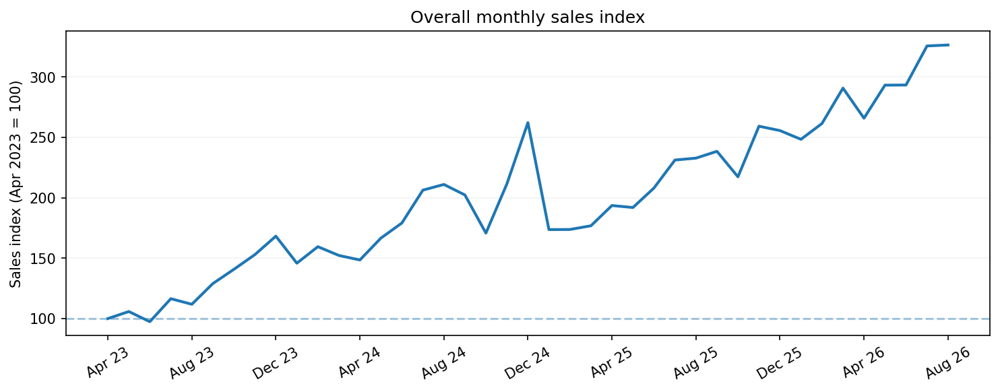
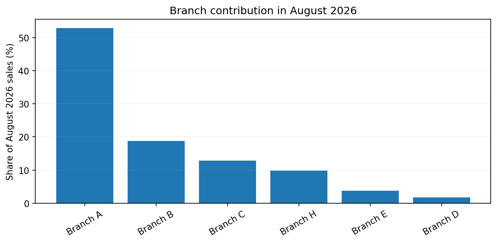
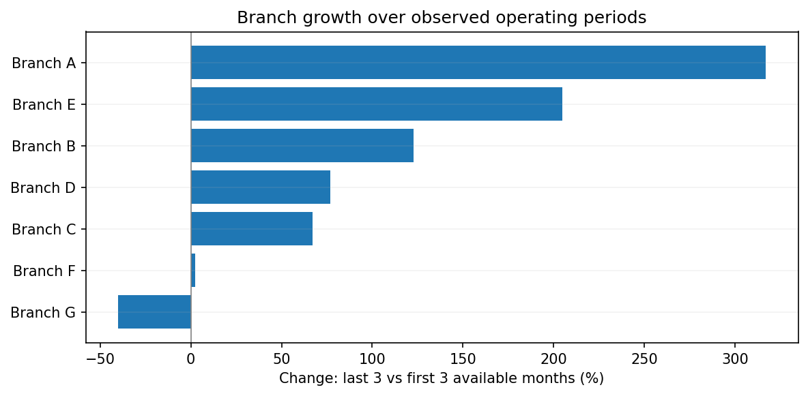
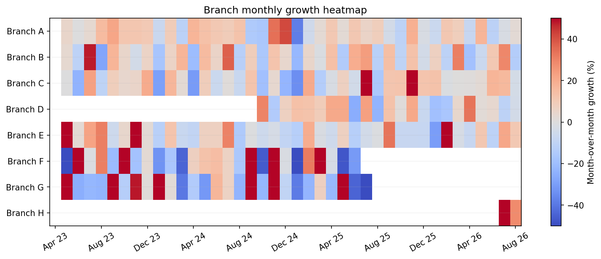
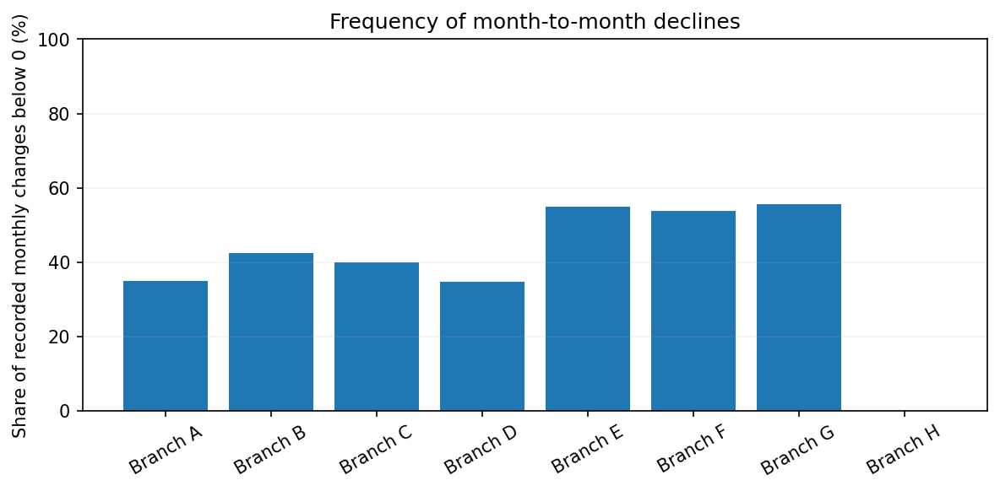
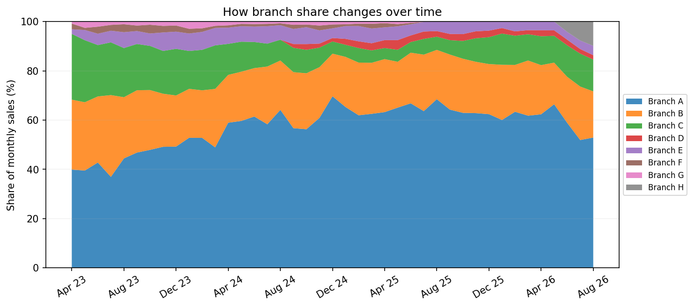
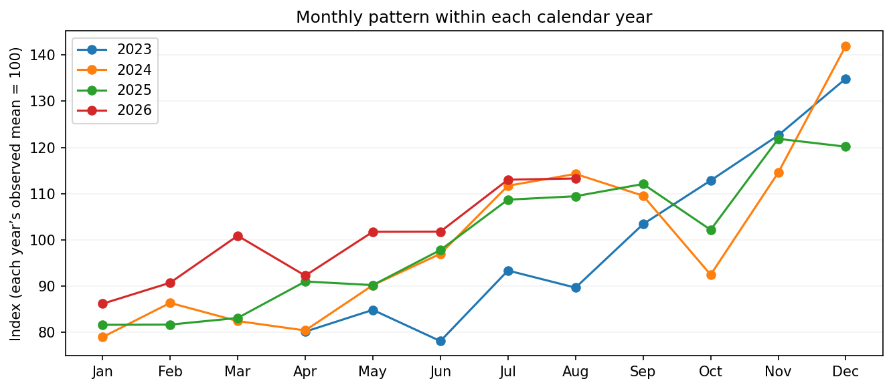
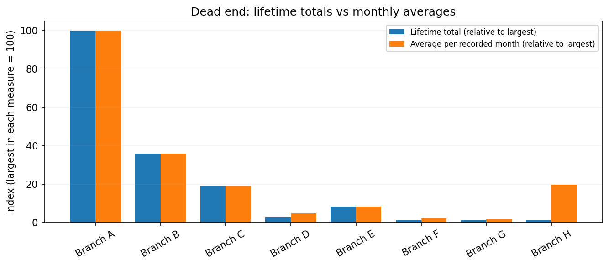

Chart 1: Overall Monthly Sales

Observation: The overall sales index increased from 100 in April 2023 to approximately 326 in August 2026. Although sales fluctuated, the long-term trend shows substantial growth.
DSC-502 | Phase 2: Explore and Draft
Medical Diagnostics Sales Visualization Project
This project explores historical sales performance for a multi-branch medical diagnostics company. The goal is to help management understand sales trends, compare branch performance, and identify areas that require additional attention.
The primary audience includes the Managing Director, General Manager, and Regional Manager.
Before creating the visualizations, the available sales records were examined to understand their structure, completeness, reliability, and suitability for the client's business questions.
Two internal Excel workbooks were provided. They contain branch-level sales summaries, customer and salesperson reports, and historical transaction records.
| Characteristic | Dataset 1 | Dataset 2 |
|---|---|---|
| Source | Customer and Salesperson Reports | Branch Sales Summary |
| File Format | Excel (.xlsx) | Excel (.xlsx) |
| Worksheets | 10 | 1 |
| Coverage | Varies by worksheet. Detailed transaction records cover Oct 2022 - Jun 2023. | Apr 2023 - Aug 2026 |
| Record Structure | Transaction-level records and summarized reports | Monthly sales and related metrics organized by branch |
| Data Volume | 28,301 detailed transaction records identified | 41 monthly periods, 8 named branches |
| Primary Use | Customer and salesperson performance exploration | Sales trends and branch comparisons |
Unit of Observation: In the detailed transaction data, each row represents a transaction record. In the branch summary, the analytical unit will be one branch during one month after restructuring the spreadsheet.
Fields Used: Reporting month, branch, sales amount, monthly growth, and where available, anonymized customer and salesperson identifiers.
The initial audit identified several issues requiring attention before visualization.
| Issue | Finding | Impact |
|---|---|---|
| Unequal Coverage | Some branches have shorter sales histories than others. | Lifetime sales comparisons may be misleading. |
| Missing Values | Customer-count and new-customer fields are partially populated. | Customer-related trends may require additional verification. |
| Date Formatting | Some reporting months are stored as text and others as Excel dates. | Dates must be standardized for accurate sorting. |
| Repeated Identifiers | Some branch serial numbers are repeated. | Stable branch identifiers are needed. |
| Mixed Row Types | Sales, growth, and customer counts appear in separate rows. | Data needs restructuring before charting. |
| Total Reconciliation | Some reported monthly totals differ from the sum of branch values. | A consistent aggregation method is required. |
| Duplicate Records | Duplicate transaction records have not yet been fully validated. | Further checks are needed before using transaction totals. |
The available data can answer some of the client's business questions directly, while other questions require additional analysis or information.
| Business Question | Can the Data Answer It? | Explanation |
|---|---|---|
| How are overall sales changing? | Yes | Monthly branch sales are available across multiple years. |
| Which branches generate more sales? | Yes | Monthly branch sales can be compared directly. |
| Which branches are growing? | Yes, with limitations | Growth should be calculated over comparable periods. |
| How are sales representatives performing? | Partially | Separate salesperson reports require further examination. |
| Which customers are becoming inactive? | Partially | Customer-level records need suitable date coverage, validation, and anonymization. |
| Which branches are most profitable? | No | Profitability is outside the agreed project scope. |
The following preparation steps are needed before building the final visualizations:
The monthly branch sales summaries provide a suitable foundation for analyzing overall sales trends and branch performance.
However, unequal reporting periods, inconsistent formatting, and incomplete supplementary fields require careful handling. The project will prioritize branch-level analysis while evaluating salesperson information separately.
Eight preliminary charts were created to investigate overall sales growth, branch contribution, monthly changes, and differences in performance.

Observation: The overall sales index increased from 100 in April 2023 to approximately 326 in August 2026. Although sales fluctuated, the long-term trend shows substantial growth.

Observation: In August 2026, the two largest branches contributed approximately 71.7% of total sales. This suggests sales are concentrated in a relatively small number of branches.

Observation: Most branches with sufficient historical records experienced growth, although the magnitude varied between branches. Differences in operating periods must be considered when interpreting these results.

Observation: The heatmap helps identify months when several branches experienced increases or decreases in sales. It also highlights differences in sales stability.

Observation: The frequency of monthly sales declines differs across branches. This may help management identify branches with less consistent sales performance.

Observation: The proportion of company sales generated by individual branches changes over time, indicating that branch contributions are not constant.

Observation: Comparing months across years helps investigate possible seasonal patterns. However, branch expansion and the limited number of years make it difficult to establish consistent seasonality.

Observation: Lifetime sales totals can be misleading because branches have different operating histories. Average monthly sales provides an additional perspective for comparing branches more fairly.
Unexpected finding / Dead end: Ranking branches solely by lifetime sales does not provide a reliable comparison of current performance.
Although overall sales have increased, performance varies considerably across branches, making it important for management to identify which branches and sales representatives contribute to growth and which require additional attention.
This statement is a working hypothesis and may change following additional exploration and feedback from the client.
Three different visualization approaches were developed to explore possible solutions to the client's requirements. These are low-fidelity sketches intended to encourage feedback on the structure and information rather than visual styling.
Branch and Sales Representative Performance
__________
__________
__________
| Sales Representative | Branch | Monthly Sales |
|---|---|---|
| Representative 1 | Branch A | — |
| Representative 2 | Branch B | — |
| Representative 3 | Branch C | — |
Conceptual wireframe — placeholder values, not actual sales data.
Intended Purpose: Provide management with a quick overview of total sales, monthly growth, branch comparisons, and sales representative performance.
Requirement Addressed: Weekly performance monitoring by senior management.
Biggest Strength: Several important performance indicators are available in one place.
Biggest Weakness: Presenting multiple metrics simultaneously may make the dashboard overwhelming.
Design Origin: Manually drawn in Paint using an AI-assisted layout reference based on the Phase 1 requirements.
Which branches are growing and which need attention?
Illustrative branch growth values — not actual data.
| Performance Indicator | Branch |
|---|---|
| Highest Sales Growth | To be determined |
| Lowest Sales Growth | To be determined |
| Requires Further Investigation | To be determined |
Which branch should management investigate or provide additional support to?
Intended Purpose: Highlight differences in branch growth and identify branches requiring attention.
Requirement Addressed: Comparing sales performance across branches.
Biggest Strength: A focused comparison makes it easier to identify performance differences.
Biggest Weakness: Provides limited information about monthly trends and individual sales representatives.
Design Origin: Developed through AI-assisted brainstorming and manually drawn in Paint.
A three-chapter visual story
Begin with the company's overall sales trend to understand how performance has changed.
Illustrative sales trend — not actual data.
After understanding overall performance, examine how individual branches contribute to company sales.
Illustrative branch contributions — not actual data.
Conclude by identifying the performance questions that require management attention.
| Area | Question to Investigate |
|---|---|
| Branch Performance | Which branch needs additional support? |
| Sales Representatives | Which representatives show declining sales? |
| Customer Activity | Are important customers becoming inactive? |
Low-fidelity storytelling concept. Illustrative charts and placeholder content only.
Intended Purpose: Guide viewers through overall sales growth, branch contributions, and management priorities.
Requirement Addressed: Understanding how sales have changed and identifying areas for investigation.
Biggest Strength: Presents findings in a clear sequence that is easy for new viewers to follow.
Biggest Weakness: Less suitable for managers who want to quickly inspect a specific branch or salesperson.
Design Origin: Developed through AI-assisted brainstorming and manually drawn in Paint.
The three design alternatives were presented to the client for review. The purpose was to identify which visualization approach best supports management's weekly sales monitoring and decision-making needs.
| Review Question | Client Response |
|---|---|
| Which design would be most useful for weekly management reviews? | Sketch 1: Management Dashboard |
| Which design makes it easiest to compare branches? | Sketch 1: Management Dashboard |
| Does the salesperson performance section provide the information management needs? | Yes. The client indicated that it makes the overall visualization easier to understand. |
| Is anything important missing from the proposed designs? | The client did not identify any missing features at this stage. |
| Which design should be developed into the final visualization? | Sketch 1, because it is simple and provides a quick, detailed overview at a glance. |
Based on the client's feedback, the Management Dashboard was selected as the preferred direction for the final visualization.
The client preferred this approach because it combines overall sales, monthly growth, branch comparisons, and sales representative performance in one location.
The dashboard is intended to help management review business performance quickly while still allowing more detailed comparisons.
The review confirmed that the client prefers a single management dashboard over a focused comparison report or scrolling narrative.
This feedback provides a clearer direction for the next phase. The final visualization will prioritize simplicity, branch-level comparisons, and sales representative performance within a unified dashboard.